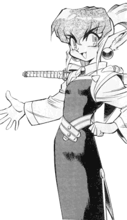

Misc FanFics: K-R
|
This section is dedicate to other works that are losely considered fan fics.
This page holds poems, short fics, spam fics, song fics, and many other tangental
works. Please go here if you would like your works
published. |
New * A-C
* D-J * K-R * S-Z
* MSTs |
K
Kagato Akara
(XellosMetallium@hotmail.com)
-
The Lonesome Dreams of a Scientist
A songfic using Aerosmith's "I Don't Wanna Miss a Thing" that portrays
a compelling and heartfelt love story between Washu and Kagato. 15KB
-9/17/2001
Ian Kamemoto
(otakusama2001@yahoo.com)
Karlmarks
(markskarl@hotmail.com)
-
I thought about...Aeka
New lyrics to "Army", by Ben Folds Five, from Tenchi's point of view;
the tone is similar to the original song. 3KB -9/10/2000
-
Tenchi Loves Ryoko
The infamous Votefic! Now available in zesty pepperjack flavor. 2KB
-12/21/2000
Katrina
(IAngelofDeath@cs.com)
-
The Death of a Princess
What was Aeka really thinking when Tenchi left her at the end of
Tenchi Universe or Tenchi TV? 4KB -11/5/2000
Katsuro
(Archangel1176@yahoo.com)
-
Aeka's Decision
What might Aeka have been thinking justb before Tenchi left Jurai.
TV Continuity. 3KB -9/24/1999
Katy
(divine_aphrael@hotmail.com)
Kaylana
(kaylana123@yahoo.com)
-
Watching
Ryoko watches Tenchi from a new perspective. 5KB -9/25/2001
Keiichi Masaki
(keiichi-dono@anifics.com)
Kenshi (Kenshi@myexcel.com)
King Vegitu
(kingvegitu@hotmail.com)
-
A New Sword
Short X-Over with two animes and a Nintando game. 5KB -2/6/2000
Kistune-sama
(ItsMyPalette@aol.com)
Kiyone-Type-Person
(JediLex@aol.com)
-
12 Days of Tsunami
Something the author and his friend did in Japanese class. 1KB
-12/21/2000
Emily "Mink" Koh
(mink249@aol.com)
-
Otomodachi
A Yuugi monologue addressing Sasami about their friendship. 14KB
-10/15/2000
-
Thorns
A Ryoko monologue addressing Tenchi mostly about her feelings and
the Sakuya issue. (STM season spoilers.) 5KB -9/23/2000
-
Scissors
Told in two-person POV through Ryoko and Aeka, Aeka disrupts the balance
of friendship in the Masaki home. 10KB -12/29/2000
Wally "Masta Killah" Kolo
(goten_kun11@hotmail.com)
Lane Kramer
(LKRAMER@landmarkcollege.org)
Kristine
(RYOKOGirl1226@aol.com)
Brook "the Total Anime Nut" Kuhn
(bkuhn@ucsd.edu)
Owen "Little Masa-ouki" Kuhn
(Lighthawkwings@masakishrine.com)
-
Choice
Tenchi is visited by a spirit of wisdom. 6KB -5/30/1999
-
Too Late
What would happen if Tenchi took too long making his decision? 6KB
-5/30/1999
-
Hall of Tears
Ayeka returns to Jurai. 8KB -12/20/1999
-
The Senile Shinto Priest
Katsuhito flips. 6KB -2/6/2000
-
Take 2
Tenchi and co. try to make OAV3. 7KB -4/17/2000
-
Action: Commercial Break
Due to the delay in Take 3, let's go to a comercial! 15KB
-2/20/2001
Owen "Little Masa-ouki" Kuhn
(Lighthawkwings@masakishrine.com)
and Brook "the Total Anime Nut" Kuhn
(bkuhn@ucsd.edu)
L
Lady Andrea Kokoro
(sailorchibi@chibiusa.org)
Lady Athena
(giadaelisa@cox.net)
Leeman
(syaoran@tampabay.rr.com)
-
My Lady Tsunami
A poem dedicated to the lovely goddess. 2KB -5/28/2001
-
Dreams of an Author
A short, romantic story about an author and the goddess of his dreams.
13KB -9/17/2001
Matthew Lewis (maybeso@ican.net)
Lil_Monkey
(Catdemon999@hotmail.com)
Katherine "Suicune" Lindroth
(HOgeo@aol.com)
Little Natalie
(snowpenguin14@aol.com)
Little Washu
(MoonPrincezz@altavista.com)
Little Washu!
(WashuvsCuteness@aol.com)
Loknar
(the_guardian20@hotmail.com)
-
Priceless
A very small parody of Mastercard's 'Priceless' series of commercials,
using characters from this fanfic series. 1KB -9/20/2001
Patricia "Kyokki" Lucky
(kyokki21@yahoo.com)
Lugia1218 (lugia1218@aol.com)
-
Ryoko meets Duck Dodgers
Duck Dodgers (a.k.a. Daffy Duck) crashes near the Masaki shrine and
Ryoko picks fights with him. 5KB -4/16/2001
M
MagiLost (MagiLost@aol.com)
Margaret (MrgrtThomp@cs.com)
Ryan Mathews
(Mathews1@ix.netcom.com)
Tom Mathews
(godphoniex@hotmail.com)
Gregory W. Matteson
(matteson@jps.net)
-
Hatching
A spam fic about Ryo-ohki and Ryoko. 4KB -7/25/1998
-
Shaken
A "what if" Dark Spamfic. 7KB -5/30/1999
-
"Cultural Differences"
The gang visits a certain well known ranch in Crawford, Texas. 25KB
-12/23/2001
Heather "Sakuya Misaki" McNully
(tenchigirl@yahoo.com)
Kenny "Acidbuk" M'comic
(acidb@postmaster.co.uk)
-
Anonymous love
A letter from once of the girls to Tenchi, who is it from? Can you
Guess? 6KB -5/30/2002
Meachy (Meachy@hotmail.com)
Meachy (Meachy@hotmail.com)
and Shinji Ikari, The 10 o'Clock Assassin
(tyree3@pacbell.net)
-
Slim Tenchi
Purge Raizah Wu-York Remix songfic. 4KB -4/20/1999
Jocko Megane
(jockomegane@cs.com)
The Menace Washuu
(allyn.howey@worldnet.att.net)
-
Ryoko's Game
A short, intense fic about Ryoko's mental instability. 8KB
-1/22/2001
Florencio B. de la Merced, Jr.
(Fmerced@pworld.net.ph)
Miss N
(nmnolan99@hotmail.com)
Mitch (wells17@gte.net)
Jeff Morris
(jeffreysmorris@aol.com)
-
I Scream, You Scream
Tenchi learns that some people will find meaning in the most innocent
of events. 8KB -11/19/2001
Mr Spock
(mr___spock@hotmail.com)
-
Tenchi's Valentine
Exactly what the title implies. Valentine's Day at the Masaki Household.
10KB -2/26/2001
Munkey Boy
(Chino_M_65@yahoo.com)
Murphy
(cocovampire2000@yahoo.com)
Murmur the Fallen
(Harijubal@aol.com)
-
The End
A spam rant with an intresting ending. 5KB -8/22/1998
N
Naiyami Kasaki
(chibiachika@masakishrine.com)
-
Achika: Mother of Tenchi
It is a story about when Achika figures out that she is famous on
Planet Jurai for being Tenchi's mother. 4KB -12/23/2001
Brian Navy (Geosword@usa.net)
N.D.M.Z.W.
(Nicknetnak@aol.com)
-
Ayeko and Ryoka
Washu's experiment causes the girls bodies to be switched. 7KB
-5/17/2000
Bryan Neef
(amaranius@yahoo.com)
Negative-Z (zacsimon@cox.net)
Nick (Tenchi316@aol.com)
William Nichols
(vette1701@earthlink.net)
-
Forever
Sometimes a song can say more than we think it can. 5KB
-12/22/2001
David "Kthardin" R. Nolen
(Kthardin@geocities.com)
O
OniFactor (maximum@aqis.com)
Clayton Overstreet
(clayton_n@hotmail.com)
-
We Have Had Enough
This story is about a fan who just cant take it anymore and decides
to solve Tenchi's love problems once and for all. 12KB -11/27/2000
-
Nightmares
Some of the Tenchi gang were having some trouble sleeping and decided
to talk it out. 8KB -1/29/2001
-
Perseverance
Ryoko tries to be the perfect wife and learn to cook something if
it kills everyone else in the house. 5KB -5/13/2002
-
A little R&R
Tenchi and the gang come to an anime character convention. 6KB
-11/11/2001
-
A sequel to Negotiations with a fan fic
writer
Aeka comes back from her last MST and the gang looks for something
to do. 6KB -11/11/2001
-
The Hunt
What do anime characters do when they have had enough? 7KB
-11/11/2001
-
Ryoko #5
My first song fic. 3KB -9/17/2002
-
Another day at the Toonami Lunchroom
The title says it all. 7KB -9/17/2002
-
The ballad of Tenchi
Tenchi's OVA adventures summed up in a short poem fic. 5KB
-9/17/2002
-
Little Red Ryoko Hood
After Washu starts up her dimension tuner Aeka sends Sasami out with
a basket of goodies. 10KB -2/15/2002
-
The Ultimate Crossover
They called me made at the institution! They said it couldn't be done.
But I showed them. 28KB -3/11/2002
-
The Prince's Bride
I feel that my fics aren't being MSTed enough so I'm puting some chum
in the water by desecrating an American classic. 11KB -5/1/2002
-
Heroes vs. Villains
A moderated debate between heroes and villains. 7KB -5/2/2002
-
Childhood Memories
Tenchi and Ryoko playing together when he was young. 5KB
-1/22/2001
-
Ryoko and Zero's Discussion
the pirate and the bot. 6KB -1/22/2001
-
Truth and honor
What if Yosho did not do any setting up? 14KB -1/22/2001
-
A race to remember
They all have space ships. They had to do something with them eventualy.
7KB -1/29/2001
-
Mihoshi's feelings
Mihoshi watches Ryoko and Tenchi and wishes it were her. 2KB
-2/5/2001
-
Goodbye
Ryoko says goodbye to her mother as the last in a long line of funerals.
Immortality can be a bitch. 3KB -5/31/2001
-
Sunset
A short fic about a moment together at the end of the day. 2KB
-7/24/2001
-
Negotiations with a fan fic writer
Ryoko hears a rumor about an up and coming MST and hires Roger Smith
to help out. 12KB -6/8/2001
-
Things Tenchi makes you think about
I have every other type of fic on this site, can't be left out on
the lists can I? 2KB -8/10/2001
-
Ryo-oki kills everyone
Tenchi and the others aren't too happy with Aeka. 9KB -7/30/2001
-
Engagement
Tenchi proposes to Ryoko. 9KB -7/30/2001
-
Dear Ryoko
Ryoko finds Tenchi's letters to her. 8KB -10/8/2001
-
Blair Cabbit
I was watching Blair Witch 2 and wrote a camping story that has nothing
to do with either of those movies. 17KB -10/8/2001
-
Give in to the dream
Washu gives Tenchi his turn at the dimension tuner. 9KB
-10/8/2001
-
The Cave
Tenchi and Ryoko finish exploring Washu's cave. 9KB -10/8/2001
-
Tenchi meets the Ripping Friends
What was I thinking when I wrote this? 4KB -12/29/2001
Hatsumi Owatama
(gailamee@hotmail.com)
P
Sam Packwood
(sam.packwood@snc.edu)
James Padilla
(santaclaws975836@aol.com)
-
The Great Reunion
Amystery fic, you as the reader must try to find out what this fic
is about and what characters are in it. 7KB -12/24/2000
Joel C. "StrikeTwice" Patoine
(StrikesTwice@hotmail.com)
Kenneth Patterson
(Katfum@tmbg.org)
-
Become
After looking through some of Tenchi's belongings, Ryoko ponders her
past and future. 10KB -1/15/2001
Penguin Masaki
(strawberrypenguin_9@yahoo.com)
PHaw410653
(PHaw410653@aol.com)
Platinum Dragon
(Platinum_Dragon@usinternet.com)
Pokejedservo (jeddol@STIS.net)
-
A Couple of Tenchi Muyo! Outtakes
Just a couple of Tenchi outtakes, the first one is a reference to
a certain Jon Cusack movie, while the other is a reference to a certain Kids
WB show. 4KB -11/15/2001
-
Chucki Muyo
A very good natured spoof of the 1st OVA series episode starring Chuckie
Finster & Angelica Pickles from Nickelodean's Rugrats. 5KB
-11/15/2001
The Psychomatic Poet
(psychomatic_poet@hotmail.com)
-
Know You Enemy
A songfic-of-a-rant protesting about the really perverted lemons and
the bastards who wrote them. 4KB -8/12/1999
Punk Rawk Jesse
(McFlysucks@aol.com)
PurpleSailorSaturn7
(PurpleSailorSaturn7@sailormoon.com)
Q
R
Rachel
(Rachelthecat@aol.com)
Rameela Dalaten
(ryoko_rd@hotmail.com)
Ran Hakubi
(trocketjason2@hotmail.com)
Raven Makibi
(ravenmakibi@aol.com)
Rayani Kitsumuri
(pikazitu@masakishrine.com)
Rpb3000
(rpb3000@mad.scientist.com)
-
No Need for Top Ten Lists!
Three top ten lists: Top Ten Things Sakuya Would Never Say; Top Ten
Worst Tenchi Fanfic Ideas; Top Ten Ways Ryo-Ohki Eats Carrots. 7KB
-5/3/2002
Emma Reid
(PPGPrincess5@aol.com)
Replicant
(replicant@NorthState.Net)
R. G. (R_G_11281@yahoo.com)
Gabe Ricard
(Darksideblues@masakishrine.com)
Adam "Asskicker"
Richmond (Adam_Asskicker@yahoo.co.uk)
John "The Incredible Dancing Quatre" Robertson
(dancingquatre@gundamwing.net)
-
Ask Kiyone
Kiyone makes a startling discovery while working late one night. 9KB
-7/30/2001
Tony "Dogface " Rodriguez
(dogface6869@yahoo.com)
-
The Hunter's Quest
A tale of a hunter and her prey that is not what it seems. 2KB
-12/22/2000
-
Ryoko Raised
American Pie rewritten (original song version). 3KB -7/31/2001
Rpb3000
(rpb3000@mad.scientist.com)
Ryan "Slim" Russin
(Necrophic@hotmail.com)
Bryan "DarkTemplar" Ryberg
(squirtle92@hotmail.com)
Ryo Masiki
(angelbaby2477@yahoo.com)
Ryoke (ryokochan3@aol.com)
Ryoko82039
(Ryoko82039@aol.com)
Ryoko-himesama
(Ryokohimesama@aol.com)
-
The Hakubi Trio of Witches
A wierd crossover/misc../comedy story based on a story I read as a
little girl. 4KB -12/21/2000
-
Mirei Okaa-san
A spamfic about Tsunami and Acheka's influence in Ryoko's life. 11KB
-11/27/2000
Ryoko Masaki
(ryoko309@hotmail.com)
-
Tenchi Chooses
My first fanfic.Tenchi finally chooses but who is it? 4KB
-1/15/2001
Ryoko-onee (ryoko_onee@hotmail.com)
Ryoko "Tillie" Masaki
(rossolr@ms.umanitoba.ca)
-
Then You Look At Me
A songfic from Celine Dion's CD: All The Way, reminded the author
of Ayeka. 2KB -4/16/2001
Ryouko's Twin
(bunny@btclick.com)